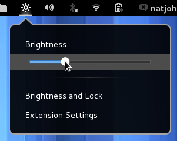
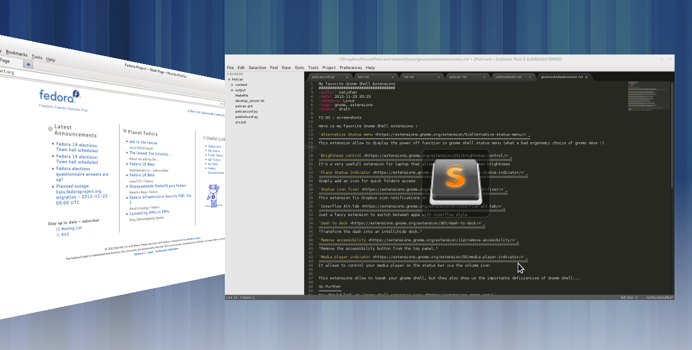
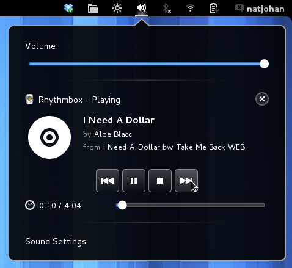

My favorite Gnome Shell Extensions
Here is my favorite Gnome Shell extensions :
Brightness control
It's a very usefull extension for laptop that allow to control your screen brightness
Coverflow Alt-Tab
Just a fancy extension to switch between apps with coverflow style
Media player indicator
It allows to control your media player on the status bar via the volume icon
This extensions allow to tweak your gnome shell, but they also show us the importants deficiencies of Gnome shell...
Go Further
You should look at Gnome shell extension page
Comments